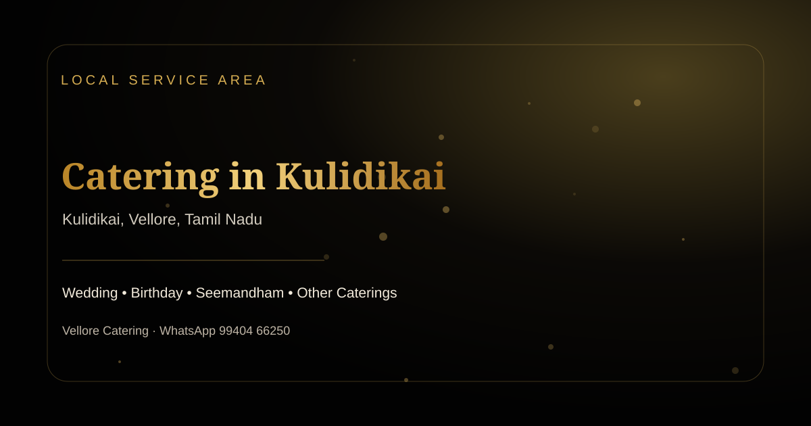

Venue-specific planning
The Kulidikai enquiry begins with access, timing and serving space rather than assuming every venue works the same way.

Servicing area · Locality / Village
Wedding catering, birthday catering, seemandham catering and other event menus for Kulidikai with direct WhatsApp enquiry.
Local catering
Kulidikai appears in the supplied Vellore service-area list as a locality / village within Vellore district / Vellore region.
For an event in Kulidikai, the useful starting point is the exact venue, meal timing and guest estimate. That allows wedding catering, birthday catering, seemandham catering and other services to be shaped around the real function rather than a generic package.
Because Kulidikai is listed as a locality / village, this page gives particular attention to last-mile access, service-equipment movement and meal timing around local functions.
Planning strengths
The Kulidikai enquiry begins with access, timing and serving space rather than assuming every venue works the same way.
Menus for Kulidikai can be adjusted around vegetarian, non-vegetarian, traditional, child-friendly and mixed-guest preferences.
Staffing, setup, replenishment and clearing for Kulidikai are matched to the selected service format.
The Kulidikai WhatsApp form captures the essential details without an account or online payment.
Four services
Wedding menus, service timing, staffing and guest-flow planning. For Kulidikai, the exact scope is confirmed after venue and guest-count discussion.
Birthday menus for children, adults and family celebrations. For Kulidikai, the exact scope is confirmed after venue and guest-count discussion.
Traditional seemandham menu planning around ritual and family timings. For Kulidikai, the exact scope is confirmed after venue and guest-count discussion.
Browse the complete Vellore catering service catalogue. For Kulidikai, the exact scope is confirmed after venue and guest-count discussion.
Event formats
Menu structure
For Kulidikai, idli, dosa, pongal, vadai, chutney and coffee can form a practical morning sequence.
A Kulidikai lunch can combine rice, sambar, rasam, poriyal, kootu, appalam, pickle, sweet and curd.
Evening catering in Kulidikai can use breads, rice or biryani, gravies, starters, desserts and beverages.
Mocktails or dessert plating can be considered when the Kulidikai venue has suitable utilities and queue space.
Cuisine choices
Illustrative menu
This {n} menu is an illustration, not a fixed package or quotation.
Badam Milk with mushroom pepper fry for the Kulidikai guest-arrival window.
Chicken biryani with onion raita, chapati with paneer gravy and an appropriate side for the Kulidikai service.
Jangiri with elaneer payasam and welcome mocktail for the Kulidikai closing course.
Fresh Fruit may suit Kulidikai when the venue can support a safe counter footprint.
Customise
Live service
A mocktails counter can add a made-to-order element in Kulidikai when the venue supports safe queueing and replenishment.
A dessert plating counter can add a made-to-order element in Kulidikai when the venue supports safe queueing and replenishment.
A fresh fruit counter can add a made-to-order element in Kulidikai when the venue supports safe queueing and replenishment.
A mini dosa and chutney counter can add a made-to-order element in Kulidikai when the venue supports safe queueing and replenishment.
Serving formats
Plated Dining can work in Kulidikai when seating, meal duration and staffing are planned around the guest count.
Buffet Service can work in Kulidikai when seating, meal duration and staffing are planned around the guest count.
Boxed Meals can work in Kulidikai when seating, meal duration and staffing are planned around the guest count.
Guest count
A smaller Kulidikai function can use a compact menu and a single service zone.
A medium-size Kulidikai function benefits from clear buffet lanes or planned banana-leaf batches.
A larger Kulidikai gathering usually requires more holding capacity, service staff and staged replenishment.
Workflow
Share the Kulidikai venue, date, meal and guest estimate.
Discuss the Kulidikai menu, dietary needs, service style and schedule.
Confirm dishes, counters, sweets and beverages for Kulidikai.
Confirm Kulidikai access, utilities, equipment and staffing.
Prepare, transport and serve according to the confirmed Kulidikai plan.
Food handling
Infrastructure
Batch planning, ingredient staging and packing for Kulidikai are organised before dispatch.
The Kulidikai route and venue access determine how vessels, carriers and materials arrive.
Tables, buffet equipment or banana-leaf requirements are matched to the Kulidikai venue.
Any Kulidikai live counter is confirmed against power, water, ventilation and protected cooking space.
People
For Kulidikai, staffing is planned across production, packing, transport, setup, serving, replenishment and clearing. The exact cook and service-team requirement depends on the confirmed menu and guest count. This page does not invent individual chef biographies that were not supplied in the project material.
Planning example
No unverified customer event is represented as a real case study.
An illustrative 229-guest function in Kulidikai could use plated dining, a menu led by lemon rice with potato roast, jangiri and badam milk, with mini dosa and chutney as an optional counter. The scenario demonstrates how the Kulidikai venue, menu and staffing decisions connect; it is not a claim about a completed client event.
Testimonials
Generated or invented testimonials are not inserted for Kulidikai. A real customer quote can be added here when the business provides permission, event context and the approved wording.
Public feedback
Ratings and review counts change over time, so the Kulidikai page does not hard-code a score. Use Google Maps to verify current public feedback.
Search Google MapsVenue types
For a homes in Kulidikai, access, serving space and utilities should be confirmed before the final menu.
For a marriage halls in Kulidikai, access, serving space and utilities should be confirmed before the final menu.
For a temple premises in Kulidikai, access, serving space and utilities should be confirmed before the final menu.
For a community spaces in Kulidikai, access, serving space and utilities should be confirmed before the final menu.
Nearby areas
Every workbook locality is linked from the Servicing Areas hub.
Cost factors
Planning scopes
These are service-scope examples rather than fixed-price packages.
A focused Kulidikai menu with core dishes and straightforward setup.
A broader Kulidikai menu with extra starters, sweets or beverages and more service support.
A multi-course Kulidikai event with selected live counters and enhanced presentation.
Questions
Kulidikai is included in the supplied service-area workbook. Share the exact venue, date and guest count so last-mile access, service-equipment movement and meal timing around local functions can be confirmed before the event.
Wedding catering in Kulidikai can be planned for breakfast, lunch or reception dining, with banana-leaf, buffet or other service styles depending on the venue.
Birthday catering in Kulidikai can cover snacks, main meals, desserts, beverages and child-friendly choices for homes, halls or family venues.
Seemandham catering in Kulidikai can be aligned to ritual timing, vegetarian menu preferences, sweets, beverages and the family’s chosen serving style.
Send the event date, exact Kulidikai venue, approximate guest count, meal timing and menu preference. For this locality / village, access and setup details are also useful.
Food-first planning
Dishes for Kulidikai are selected to work together rather than making the menu long for its own sake.
Food that travels and serves well is prioritised for the actual Kulidikai route and timing.
Traditional favourites, spice balance and dietary requests can be discussed for the Kulidikai guest mix.
Guest estimates and batch replenishment help avoid unnecessary display quantities in Kulidikai.
Book
For a useful Kulidikai response, include the exact venue, approximate guest count, meal timing and whether the enquiry is for wedding catering, birthday catering, seemandham catering or another service.
Share three details and WhatsApp opens with your enquiry ready to send.
Contact
Map
Related catering
Wedding menus, service timing, staffing and guest-flow planning. Use this from the Kulidikai page when it matches the function.
Birthday menus for children, adults and family celebrations. Use this from the Kulidikai page when it matches the function.
Traditional seemandham menu planning around ritual and family timings. Use this from the Kulidikai page when it matches the function.
Browse the complete Vellore catering service catalogue. Use this from the Kulidikai page when it matches the function.
Guides
Practical notes for Catering Service Staff: Checklist for Family Preferences around Ponnai, covering menu choices, guest planning, service coordination and family preferences.
Practical notes for Temple Function Catering Service Guide: Practical Decisions for Summer Events, covering menu choices, guest planning, service coordination and summer events.
Practical notes for How to Improve Mixed Menus for Buffet Catering: Vellore Guest-Count Guide, covering menu choices, guest planning, service coordination and mixed menus.
Practical notes for Food Hygiene: Menu Guide for Service Timing around Kammiyambattu, covering menu choices, guest planning, service coordination and service timing.
Practical notes for School Event Catering Planning Guide: Practical Decisions for Family Preferences, covering menu choices, guest planning, service coordination and family preferences.
Practical notes for How to Improve Summer Events for Banana Leaf Service: Vellore Venue Coordination Guide, covering menu choices, guest planning, service coordination and summer events.